Up: Rの利用に関する備忘録 Previous: miceadds: Some additional multiple
不完全な多変量データを補完するためのパッケージ (van Buuren & Groothuis-Oudshoorn, 2011)7
多変量データの補完には、joint modeling (JM) と fully conditional specification (FCS)8 とが知られているが、このパッケージは後者を行うもの。
連鎖方程式 chained equations によって、多変量データの代入に係る様々な問題9に対処
多変量の完全データ は未知のパラメータ 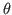 のみによって発生するとする。 今、 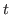 番目の連鎖方程式を考えると、Gibbs sampler
| 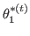 | 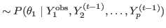 | (5.4) |
| 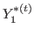 | 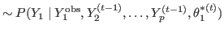 | (5.5) |
| 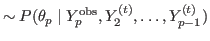 | (5.6) | |
| 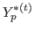 | 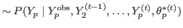 | (5.7) |
通常のMCMCと異なり、10-20回程度の更新で収束する。
データが data01 に data frame として格納されているとする。 このとき、
md.pattern(data01)
で各欠測パターンとその人数の内訳を、
> md.pairs(data01)
$rr
x1 x2 x3 y
x1 25 16 17 15
x2 16 16 16 13
x3 17 16 17 14
y 15 13 14 15
$rm
x1 x2 x3 y
x1 0 9 8 10
x2 0 0 0 3
x3 0 1 0 3
y 0 2 1 0
$mr
x1 x2 x3 y
x1 0 0 0 0
x2 9 0 1 2
x3 8 0 0 1
y 10 3 3 0
$mm
x1 x2 x3 y
x1 0 0 0 0
x2 0 9 8 7
x3 0 8 8 7
y 0 7 7 10
で「変数 変数」形式の行列で欠測パターンを出力することができる。 r は観測、m は欠測を表す。 例えば、(x2, y) の組み合わせでは、双方とも欠測のなかったケースが 13、前者が欠測で後者は欠測がないケースが 3 あった、といったことがわかる。
データ data01 から代入値を発生させて imp に代入し結果を閲覧するには、関数 mice() を用いて
imp <- mice(data01, seed=23109) print(imp)
のようにする10。
デフォルトでは、代入の数は 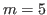 。 もし代入回数を増やしたいのであれば、引数として m=50 のように追加する。
また、Gibbs sampler の更新回数は maxit で指定できる。 デフォルトでは5回。
負のカウント値、妊娠中の男性など、代入によってありえないデータが発生していないかチェックすること。 代入結果が imp に格納されており、変数 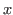 の代入結果をチェックしたいなら、
imp$imp$x
で代入値が行列（欠測ケースID 代入回数）で表示される。
全変数の代入済みデータセットは、関数 complete() で返される。 代入結果が imp に格納されているとすると、例えば2回目の代入済みデータセットは、
complete(imp, 2)
で返される。
また、代入された全てのデータを一気に縦につなげて表示させるには、
complete(imp, "long")
と指定する。
代入済みの各データセットに分析を行うには、関数 with.mids() を用いる。
例えば、imp に代入された変数 y,x1,x2 を用いて回帰分析を行うのだとすると、
fit <- with(imp, lm(y~x1+x2))
でよい。
この結果をプールして表示させるには、
print(pool(fit)) summary(pool(fit))
などとする。 すると、
est se t df Pr(>|t|) lo 95 hi 95 nmis fmi lambda
(Intercept) 5.96 74.53 0.08 9.22 0.94 -162.04 173.96 NA 0.46 0.36
x1 29.73 14.88 2.00 4.33 0.11 -10.37 69.82 0 0.73 0.63
x2 5.14 2.19 2.35 12.91 0.04 0.41 9.87 9 0.33 0.23
のような出力が得られる。
出力について、
以下のことを常に考慮する必要がある。
一変量の代入法は表 5.3.2 の通り。 この名前を、代入すべき変数の列ごとに mice() 内の引数 method= で指定する。
もし method="norm" のように一つだけ指定すれば全ての変数がその方法で代入される。
一方、method=c("","norm","pmm","mean") のように列ごとに異なる代入法を指定することもできる11。
| 方法 | 意味 | 尺度のタイプ | デフォルト |
| pmm | Predictive mean matching | numeric | Y |
| norm | Bayesian linear regression | numeric | |
| norm.nob | Linear regression, non-Bayesian | numeric | |
| mean | Unconditional mean imputation | numeric | |
| 2L.norm | Two-level linear model | numeric | |
| logreg | Logistic regression | factor, 2 levels | Y |
| polyreg | Multinomial logit model | factor, 2 levels | Y |
| polr | Ordered logit model | ordered, 2 levels | Y |
| lda | Linear discriminant analysis | factor | |
| sample | Random sample from the observed data | any |
各変数の型については、str(data01) のように確認する。
代入対象となる変数ごとに、説明変数の組を指定することができる。
代入結果が imp に格納されているとき、どの変数がどの変数によって説明されているかは、次のように確かめられる12。
> imp$predictorMatrix
x1 x2 x3 y
x1 0 0 0 0
x2 1 0 1 1
x3 1 1 0 1
y 1 1 1 0
行が代入対象となる変数、列が説明変数を表す。値が 1 であればその説明変数が使われたことを、0 であれば使われなかったことを表す。 この例では、x1 は欠測がないので代入の対象となっておらず、x2 は x1, x3, y を説明変数として代入されていることがわかる。
仮に x2 を説明変数に用いたくなかったとする。 この場合、
> pred <- imp$predictorMatrix # あるいは imp$pred > pred[, "x2"] <- 0 # x2 の列を全て0にする > imp <- mice(data01, pred=pred)
でよい。
仮に、x2 を代入対象としたくなかったとする。 この場合、
> meth <- imp$meth > meth["x2"] <- "" # x2 の代入方法を空欄にする > imp <- mice(data01, meth=meth)
で代入がスキップされる。
時間をかけずに imp を作成したい場合、更新回数をゼロとした代入を実行すれば良い。 これには、mice() に引数 maxit = 0 を指定する。 これで、大きなデータでも長い時間かけずに imp$pred や imp$meth を得て編集できる。
Hox (2002) のデータ popmis を用いる。
> head(popmis,5) pupil school popular sex texp const teachpop 1 1 1 NA 1 24 1 7 2 2 1 NA 0 24 1 7 3 3 1 7 1 24 1 6 4 4 1 NA 1 24 1 6 5 5 1 NA 1 24 1 7
ここで、
> md.pattern(popmis)
pupil school sex texp const teachpop popular
1152 1 1 1 1 1 1 1 0
848 1 1 1 1 1 1 0 1
0 0 0 0 0 0 848 848
より、欠測は popular にのみある（848ケース）ことがわかる。
さて、ここでは
predictorMatrix では、
もし、popular について
| 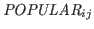 |  |
(5.8) |
> imp <- mice(popmis, maxit = 0)
> pred <- ini$pred
> pred["popular", ] <- c(0, -2, 0, 2, 1, 2, 0)
> imp <- mice(popmis, meth = c("", "", "2l.norm", "", "", "", ""),
+ pred = pred, maxit = 1, seed = 71152)
のように predictorMatrix を指定すれば良い。
変数の数が数百にも及ぶような場合、多重共線性や計算上の問題により、全ての変数を説明変数として用いることは難しい。 せいぜい15から25変数くらいが妥当なところか。
van Buuren et al. (1999) による、説明変数選択の手続き
変数間の相関関係をチェックする。 ペアワイズ除去した変数間の相関行列や、欠測の有無と観測値の相関行列など。 後者なら、
> cor(y = data01, x = !is.na(data01), use = "pair")
x1 x2 x3 y
x1 NA NA NA NA
x2 0.086 NA 0.139 0.053
x3 0.008 NA NA 0.045
y -0.040 -0.012 -0.107 NA
とすると、data01 の各変数について、ある変数の値と別の変数の欠測の有無との相関（点双列相関）行列が返される13。 上の例では、x2 の欠測と x1 の観測値には 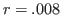 の相関があるということになる。
また、代入対象となる変数が欠測で予測に用いる変数が観測であるケースが、代入可能となる変数が欠測で予測に用いる変数が観測であるケースと欠測であるケースの合計に対してどれくらい存在するかを算出して参照することもできる。予測に用いる変数に欠測が多ければ、そもそも説明変数として用いるほどの情報を持っていないということで外す。
関数 quickpred() によって、以上の基準を用いて説明変数行列 predictorMatrix を自動的に指定することができる。 例えば、
imp <- mice(data01, pred = quickpred(data01, minpuc = 0.25, include = "x1"))
のようにすれば、予測に用いることのできるケースの割合が 0.25 以上の説明変数を自動的に含むこと、また x1 は常に含むこと、が指定できる。
quickpred() の引数としては、mincor（点双列相関の最小値）、minpuc（予測に利用できるケースの割合の最小値）、include, exclude（使用 or 不使用）がある。
変数変換を伴う代入について、大きく以下の2つがある。
例えば、x1 を予測するには、x2 よりも log(x2) の方が適切だと考えたとする。
> data01 <- cbind(data01, logx2 = log(x2)) # 変数を変換して追加
> ini <- mice(data01, max=0, print=F)
> meth <- ini$meth # 代入方法を指定する行列
> meth["logx2"] <- "~log(x2)" # logx2 については、x2 を変換したものであることを明記
> pred <- ini$pred # 説明変数を指定する行列
> pred[c("x2","x3","y"), "logx2"] <- 0 # x2, x3, y は logx2 を予測に用いない
> pred["x1", "x2"] <- 0 # x1 の予測には x2 は用いない（logx2 がある）
> imp <- mice(data01, meth=meth, pred=pred, seed=38788, print=F)
とすればよい。 新たな（欠測入りの）log(x2) は x1 の代入にのみ用いられ、それ以外の変数の代入には x2 が用いられることになる。
mice() が返した値を plot() にわたしてやれば良い。 例えば、
> imp <- mice(data01, seed=23109,maxit=20)
> plot(imp,c("b1","b2","b3"))
とすれば、変数 b1, b2, b3 の更新回ごとの代入値の平均とSDが図5.1のようにプロットされる14。
「更新回ごとの代入値の平均とSD」の意味がよくわからない。 Gibbs sampler の各更新では、候補値が1つではなく複数サンプリングされるのだろうか？
元の不完全データの分布と、代入値を含む完全データの分布を描いてチェックしてみる。 例えば、
> densityplot(imp,~age+b1)
で変数 age, b1 の分布が描画される（図5.2）。
また、傾向スコア propensity score を条件付けたもとでの観測値と代入値の分布を比較することもある。
> x1.na <- is.na(data01$x1) # x1 の欠測の有無を格納 > fit.x1 <- with(imp, glm(x1.na~x2+x3+y, family=binomial)) # x1 の欠測を完全データから予測 > ps <- rep(rowMeans(sapply(fit.x1$analyses, fitted.values)), 6) # 傾向スコア（5つ分を平均） > xyplot(imp, x1~ps|.imp) # プロット
関数 with.mids()15 により各データセットを分析し、pool() で出力を統合する。
関数 pool() は、coef() と vcov() メソッドを両方持っているオブジェクトであれば、どんなものにでも適用できる。 また、nlme パッケージの lme クラスにも対応している。
Taichi Okumura